Understand Malaysia: 12 topics for new buyers
Short guides to the country, its people, daily life and what it means for buying a home here.
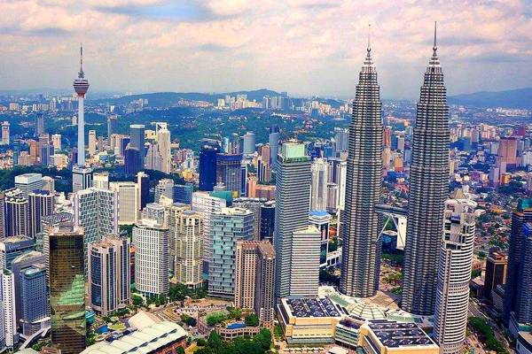
Malaysia at a glance
Where it is, how it is run, and the everyday basics.
Read more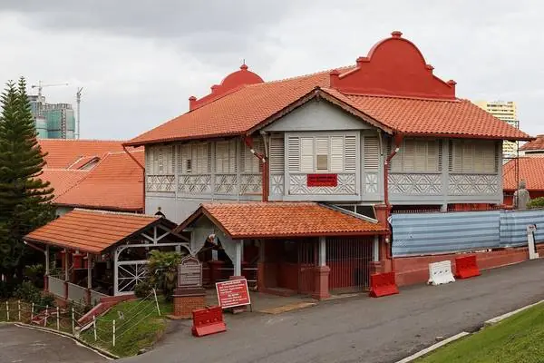
A short history
From the Melaka Sultanate to independence in 1957.
Read more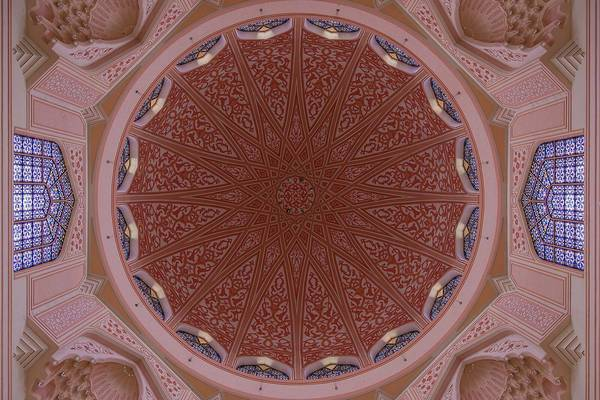
People and religion
Many communities, and faiths living side by side.
Read more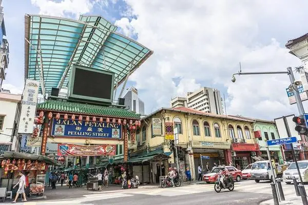
Languages
Malay is official, and English is everywhere.
Read more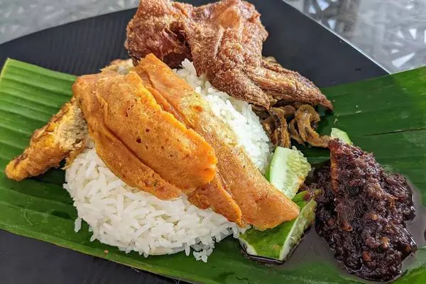
Food
Nasi lemak, roti canai and the 24-hour mamak.
Read more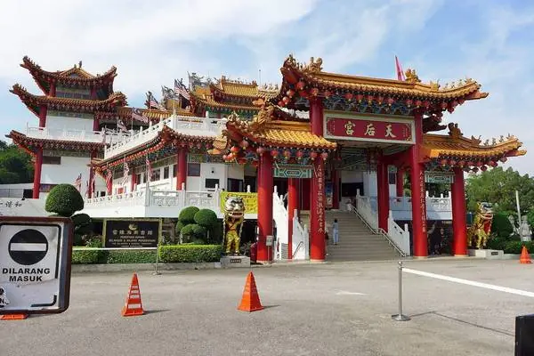
Festivals and holidays
Hari Raya, Chinese New Year, Deepavali and Christmas.
Read more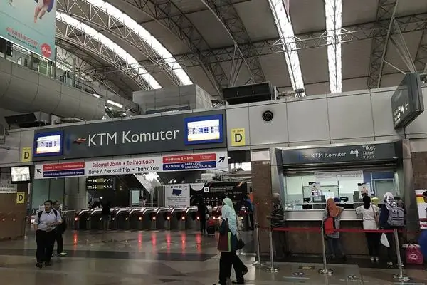
Getting around
LRT, MRT, Monorail, KTM, airport trains, Grab and highways.
Read more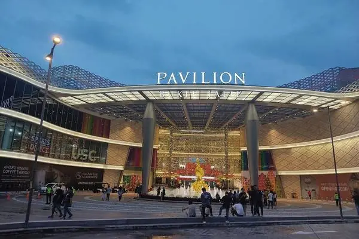
Shopping malls
Pavilion, The Exchange TRX, Mid Valley and more.
Read more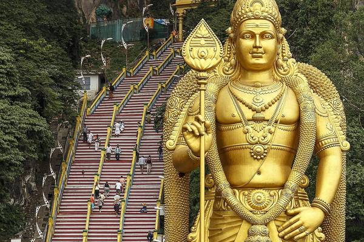
Places to visit
Petronas Towers, Batu Caves, George Town, Melaka, Langkawi and Borneo.
Read more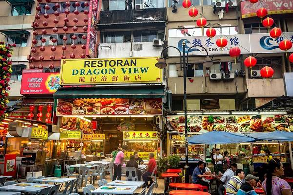
Cost of living
What is cheap, what is not, and the costs of owning.
Read more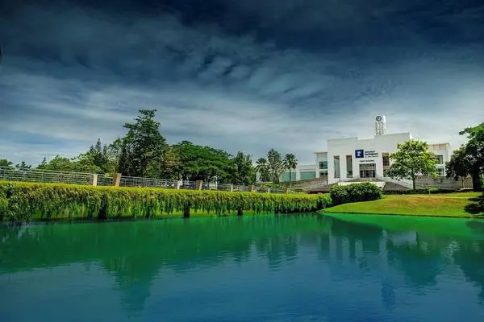
Schools and healthcare
International schools, branch campuses and private hospitals.
Read more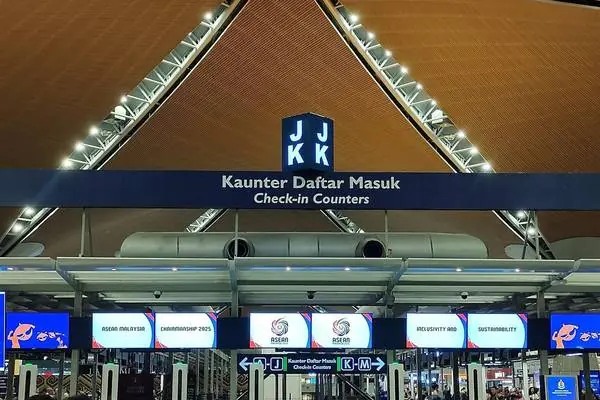
Visas, safety and weather
Short visits, long stays, staying safe and the monsoons.
Read moreThinking of buying in Malaysia?
Ask Keith about areas, projects and the rules for foreign buyers.